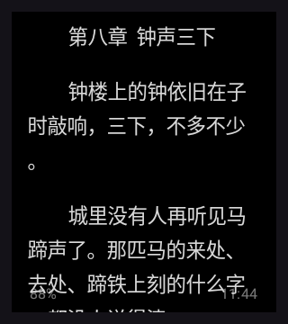
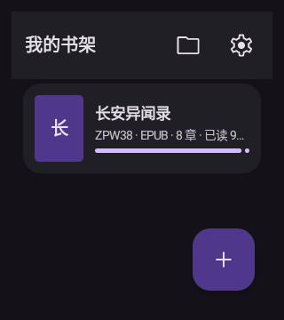
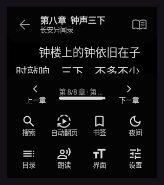
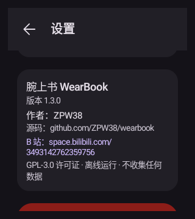
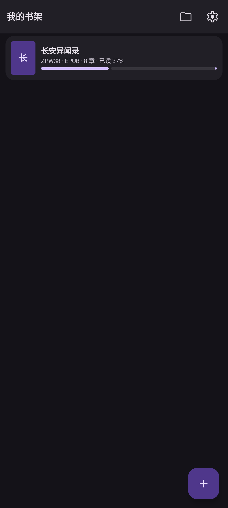
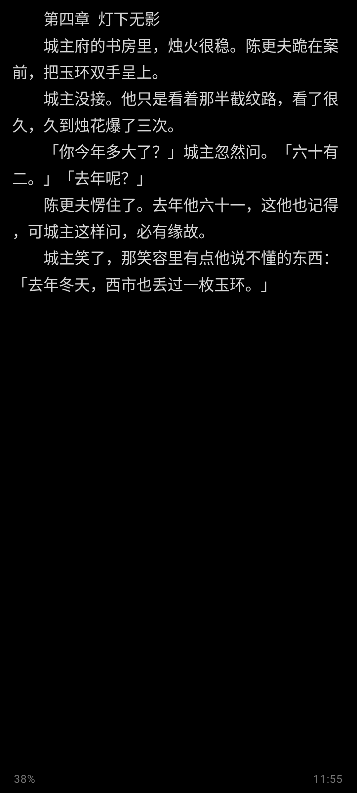
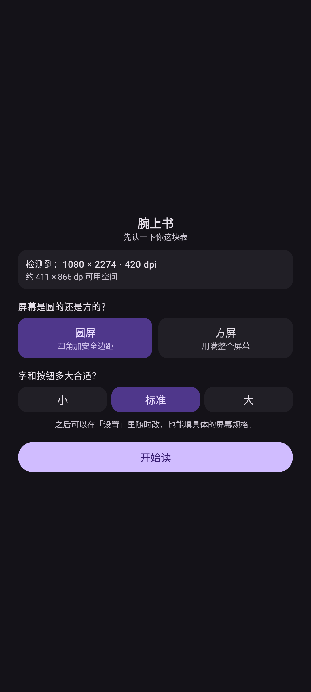
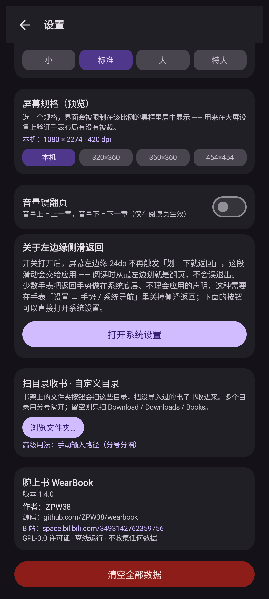

抬起手腕
就能接着读
一个专为小屏幕重做的阅读器 —— 纯原生 Compose 绘制，跑在手表上，装得进、跑得动。 支持 TXT / EPUB / MOBI / AZW·AZW3 / HTML，含正文插图与漫画模式。

为什么专门做个手表版
手机上的阅读器直接丢进手表，会撞上三件事：屏幕只有 320×360、堆内存只有 96 MB、 系统还拦着本地文件。这个项目就是逐个把这三件事解决掉。
▤为圆屏重做排版
安全边距按短边等比推算（上下 7%、左右 2.8%），不是写死 10dp —— 否则标题和状态栏正好被弧线咬掉。
◷续读精确到字
进度记的是「第几章的哪一段的第几个字」，不是页码。改字号、换屏幕都不跳页，进程被杀也不丢。
⚡只有 1.2 MB
没有内嵌浏览器、没有字体包、没有广告 SDK。覆盖安装秒完，装进小存储也毫无压力。
▦漫画模式
一屏一张整页图，点右侧翻页、双击放大。自动识别「几乎全是图」的书，图文混排的走手动入口。
↙五种导入方式
文件浏览 / 系统分享 / 打开方式 / 手机扫码传书 / 链接直下。都不需要账号；手表上没有文件管理器也能用。
◎表冠与音量键
转表冠翻页、按音量键翻章。走 Activity 层接收，不用管哪个组件持有焦点。
界面
手表端 320×360 真实截图，手机端 1080×2400。







安装
从 Releases 下载 APK。
v1.9.2 起改用正式签名证书（此前是调试证书）。签名不同，安卓不允许覆盖安装。
卸载会清空书架和阅读进度。书放在「专属文件夹」里的话，重装后扫目录能收回书架，但阅读进度保不住。
华为会拦截 adb install。用数据线把 APK 拷到 Download 目录，在手表上用文件管理器点开安装。
adb install -r wearbook-watch-1.9.2.apk
应用内「手机传书」：手表开一个局域网页面并显示二维码，手机扫码后用浏览器上传。不用线、不用权限。
Gradle 构建，assembleRelease 产出已签名 APK。签名密钥不在仓库里，见 SIGNING.md。
常见问题
手表上看不到我的电子书文件
Android 11+ 只允许应用看到音乐、图片这类媒体文件，epub / txt 会被系统过滤掉。手表更麻烦：Wear OS 的系统设置里根本没有「所有文件访问」这个开关，系统文件选择器也是个空壳。
所以请用 「专属文件夹」：把书放进应用的专属目录（数据线连电脑或用手机端工具传），那个目录任何系统都允许读写。「手机传书」 是更省事的方式。
adb 装不上，报 INSTALL_FAILED_VERIFICATION_FAILURE
华为手表的安装校验服务拦了 adb 安装，没有命令行绕过办法。只能把 APK 拷到手表存储里，用文件管理器手动点开安装。
支持哪些格式？
TXT（UTF-8 / GBK 自动识别，能按「第X章」分章）、EPUB（含正文插图）、MOBI、AZW / AZW3（按书自带目录切章）、HTML。
会上传我的书或阅读记录吗？
不会。应用没有账号体系，没有统计 SDK，书和进度都只存在本机。唯一的网络权限用于「链接导入」下载和「手机传书」局域网传输 —— 两者都只做文件传输，不解析站点、不注入 Cookie。
为什么安装包这么小？
排版和渲染全部交给系统原生的 Compose，没有内嵌浏览器内核、没有字体包、没有广告 SDK。打开 R8 压缩后只有 1.2 MB。
能装在手机上吗？
能。同一套代码在手机上也正常工作，设置里有「界面缩放（等效 DPI）」和屏幕规格预览，可以让手机模拟出手表的小屏幕来验证布局。
用了什么许可证？
GPL-3.0。源码在 GitHub。